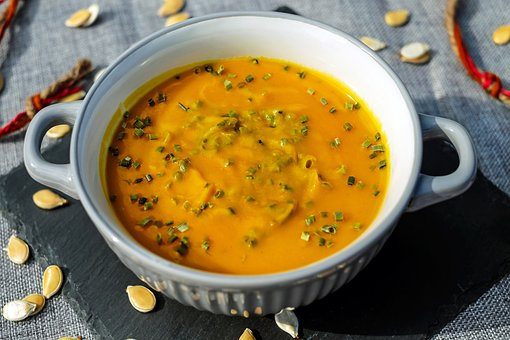

Pumpkin Soup

This classic, creamy pumpkin soup is so delicious and healthy
Pumpkin soup is a usually 'bound' soup made from a purée of pumpkin. It is
made by combining the meat of a blended pumpkin with broth or stock. It
can be served hot or cold, and is a common Thanksgiving dish.
Ingredients:
- 1kg pumpkin, peeled and chopped
- 2-3 teaspoons reduced-salt vegetable stock powder
- 3 cups boiling water
- 1 tablespoon olive oil
- 1 medium brown onion, chopped
- cloves garlic, crushed
- 1/2 teaspoon ground cumin
- 1/2 teaspoon ground nutmeg
- 1 cup skim milk
- 1/4 cup reduced-fat sour cream, to serve
- 4 tablespoons chopped roasted nuts and seeds
Steps:
-
In a large heavy-based pan, place pumpkin, stock powder and boiling
water. Cover and bring to the boil. Reduce heat and simmer for 15 to 20
minutes, or until softened.
-
Meanwhile, heat olive oil in a saucepan over medium-high. Sauté onion
and garlic for 3 or 4 minutes, or until onion is softened. Add cumin and
nutmeg and cook for 30 seconds. Add milk and season with cracked black
pepper.
-
Remove pumpkin from heat. Pour milk mixture into pumpkin mixture. Using
a stick blender, carefully blend until smooth. Return to stove and
reheat, if needed.
-
Divide soup among four bowls. Swirl over sour cream and scatter with
chopped nuts and seeds.